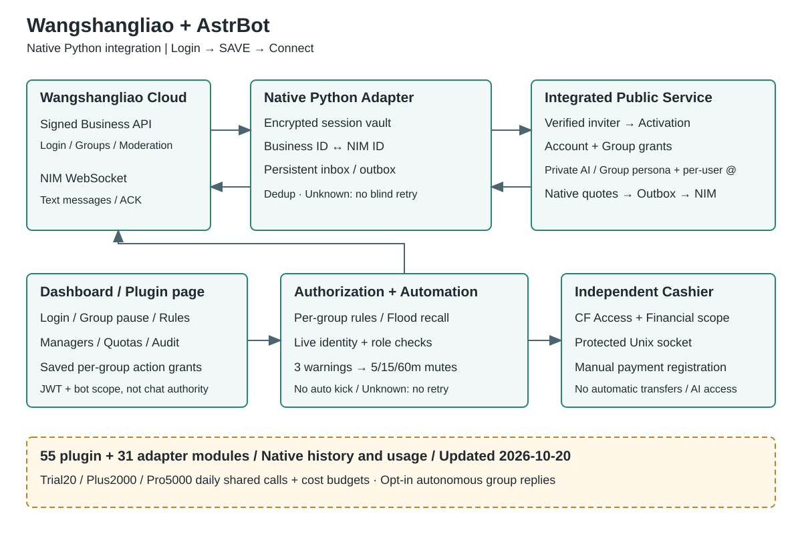

All private menus, group selection, friend approval/welcomes, personal knowledge, dedicated support, private AI/admin guidance, finance chat and image intake are retired. Preserve conversations, knowledge, invitations, ledgers, payments and audits; historical roles and content never grant present authority. See the migration mapping and fixed group workflows. Retirement, mute-first and raid changes still await integrated loading and live acceptance. Raid defense defaults off.
| Principal/layer | Retained responsibilities | No implied grant |
|---|---|---|
| Ordinary member | Public group help, ranking, invitation/activity queries and entry | List administration, private features, Dashboard login or public personal-finance queries |
| Separately authorized report member | Real @MEMBER 禁言128 in explicitly granted bot/groups,1..4320 whole minutes (three days maximum) |
Kicking, unmuting, lists, rules, finance or Dashboard; neither report nor manager status implies this grant |
| Authorized native group owner/admin | This group's fixed rule, native mention/reply list, activity and schedule commands | Other groups, global Dashboard, group-AI profiles/tools or group-knowledge writes |
| Existing authorized Dashboard operator | WebUI rules, lists, keyword/scheduled images, activities and Invitation Settlement | AI confirmation, automatic payments or bypassing native roles/version/lifecycle |
| Server-owned group AI | Account/group models, personas, tools, topics, hours, modes and group knowledge | Private consultation, personal knowledge or administrator execution; no real history, tools or skills inherited from global profiles |
| Native adapter | Final authority/identity checks, idempotency and separate receipts | Nickname identity guesses, unknown retries or admins_id-only grants |
Active command declarations contain group commands, not private-only commands marked as merely retired. Server-only metadata has no executable chat location. The guidance module generates only group/WebUI procedures; compatible exports do not restore private routes. AI cannot execute, save or confirm. Group whitelist addition is a direct real mention. Group blacklist addition immediately mutes for the confirmed duration without kicking. Group removal removes and unmutes with separate outcomes; Dashboard removal only removes.
Selected member speech reporting in speech_activity.py aggregates existing
valid speech without itself granting whitelist or management authority.
delegated_mutes.py separately intersects explicit server-owned mute-only grants
with current report identities and groups. Single native mentions, protected
targets, existing mutes, final authorization and separate receipts remain enforced.
It never delegates kicking or other administration. The bilingual
architecture table also includes existing image recognition, lottery time and
amount-validation modules. Documentation is not deployment or live-sanction evidence.
Invitation Settlement requires existing Dashboard authorization, not an ordinary group-manager role. Retired private finance grants are not Dashboard accounts.
Updated October 22, 2026 Beijing time. Applies to wangshangliao_open.mode=integrated.
Account login stays in Bots; public control is under
Plugins → Wangshangliao Management. The Architecture and Permissions tabs use
dashboard/plugin-pages/wangshangliao/reference-tables.json.
Implementation does not imply complete live acceptance; see
dated acceptance evidence.
At that date there were 71 top-level Python source modules in the plugin and 31 top-level Python modules in the native adapter directory. The dashboard architecture groups responsibilities into 25 areas, not separate processes or plugins. Source counts include test helpers and refusing compatibility guards; those are not public features. All 71 plugin and 31 native modules are mapped in the architecture table. Regressions compare both source directories with that mapping so module additions or removals require a matching documentation update. The permission reference distinguishes seven roles and forty features.
Final offline regression: 7,392 passed, 52 skipped, zero failures. Following user authorization, AstrBot was fully restarted at 03:56:52 Beijing time on October 22, 2026, loading all three media parsers and the fixes below. This is not live sanction acceptance. Both active Wangshangliao accounts are online; the stopped account and group-AI switches are unchanged. The independent cashier was not restarted. Startup registered three disabled Telethon entries and added one startup audit; existing configuration and business ledger tables are unchanged. See the maintenance record.
content_rules.py requires both the original inbox and current payload's
_media_revision to match the current group-rule revision. Split-ad chronology
uses native send times within bounded evidence, not arrival order.group_ai.py checks the native conversation snapshot before tool continuation
and delivery. A dispatched continuation with an unknown outcome blocks group AI
as model_result_unknown, without an automatic repeat call.private_batches.py freezes the account guard and session generation before
awaiting identity verification, then rechecks cancellation and scope changes.native_conversations.py rechecks the current conversation ID after reading;
this is still not atomic compare-and-swap for checking and updating.authority_guard(), member_whitelist.py compares the persisted tenant
against the complete original snapshot, rejecting differences as tenant_changed.
The same guard runs before writing and before transaction commit, covered by the
final regression and loaded by the full restart.The earlier five-area audit and documentation phase made no restart, test messages,
model calls, ledger edits or switch changes. The user subsequently authorized loading
and verification. Only astrbot.service was fully restarted on October 20, 2026
at 09:47:09 UTC (17:47:09 Beijing), changing PID 2490557 to 772193, with NRestarts=0.
The independent cashier remained PID 212703. The tested management artifact was
published atomically, including its new labels. DaHa account 43506527 is online
and all nine enabled platforms are running.
Group 1516387 now has group-AI configuration version5 with enabled=false,
mentions=false, autonomous=false, and idle=false. Earlier enabled snapshots
and the 15:47:56 Beijing autonomous-reply receipt/native conversation record are
historical, not current switch state or real-group/phone acceptance for this batch.
The current DeepSeek model/credential binding has confirmed finite supplier quota
metadata and local protection. Exhausting the supplier quota to prove rejection has
not been tested. Other bindings do not inherit this confirmation.
This batch's group-profile routing, mention histories isolated by adapter instance, account, group, verified member UID and NIM identity, and prefix-free group output were loaded by that full backend restart, not a plugin reload. Static guide publication does not itself load code or change group-AI switches. No test messages or model calls were made for this deployment; restart and earlier autonomous-reply evidence do not establish new-version real-group acceptance.
At 09:49:14 UTC (17:49:14 Beijing) on October 20, the protected fingerprint exactly
matched the pre-load value 149a44e0f399add009c69d9c027fbf2b95314a7242d69130ed0a71d749bbe8a1.
Stable group-AI rows, all ai_profiles rows, all nine enabled platforms' running/
connection states, and backend source SHA values were unchanged across deployment.
The queue had pending=0, rejected=0, review=[]; the deployed management SHA
matched the staged artifact. After waiting for a roster response with HTTP 200,
the actual management page passed 390/1440px checks without JS errors, overflow or
browser write attempts. The 110-line startup journal
had no ERROR/traceback markers. Evidence is in before.json, after.json and
browser.json under /opt/backups/wsl-load-20261020-78MTwE/.
Native actions.py previously forced warning to auto_recall=False and used
caller-supplied userName/ID labels. The fix uses a real nickname only after an
exact UID/NIM match in the account/group's authoritative complete roster.
Verified identity without a nickname sends body text only, never an opaque-ID
mention; identity conflicts still suppress sending. auto_recall=True schedules
twelve-second recall from an actual send receipt, without replaying old warnings.
This native fix was loaded by the full shared AstrBot restart above, not a plugin
reload. That deployment stage sent no real warning. Subsequently, owner 31846829,
receiver 43506527 and sender 23691273 reused their three online connections in
test group 1459282. test_advertising isolated three real warnings into two fixtures
of one and two warnings, not complete first/second/third escalation in one fixture.
The authoritative native userNick supplied @大蛤 and the correct target;
groupMemberNick=testfork was not preferred. Independent peer records verified
original-message recall, warning delivery and warning self-recall, including
authors/operators matched to local receipts. Warning acceptance-to-recall
notifications took 12.112/12.115/12.125 seconds, not measured phone disappearance.
Rules and the receiver's original native-member role were restored; windows closed.
Formal groups, finance and normal punishment counts were unchanged, while native
receipts and minimal audit remained. Testing made zero model calls, added no NIM
connection and restarted no service. This accepts only nickname/target and warning
recall, not mute escalation, full functionality or phone rendering.
Evidence: /opt/backups/wsl-warning-live-20261020-I5Z5qf/result.json.
The first verifier's hash-parsing error was recovered read-only without resending;
see isolated acceptance.
The 619 passing tests precede the missing-nickname
fallback refinement, not final regression or phone acceptance. Historical audit
dates and findings remain unchanged.
Final offline regression subsequently completed in six disjoint batches:
a-b, c, d-f, g-m, n-r, and s-z. Aggregating
/opt/backups/wsl-resume-20261020-YN7uIb/regression-{range}.xml yields 6481 unique
cases: 6429 passed, 52 conditionally skipped, zero failures and zero errors.
File coverage exactly matches tests/test_wangshangliao*.py and tests/test_wsl*.py,
without duplicate cases. Earlier single-process runs ended with SIGTERM (exit143);
they are not passes and are excluded from this aggregate. These are offline results
only, separate from the scoped three-warning live checks above; they establish
neither group-AI/full-function acceptance nor phone rendering. Unrelated audit
findings are not resolved by this result.
After restart, the offline actions, reply_recall, group_ai and
native_conversations regressions passed another 308 tests in 14.07 seconds;
see focused-regression.xml in the deployment backup. Read-only native receipt
observation at deployment found zero new recall intents and zero pending recalls,
not live warning proof. Subsequent warning receipts are separate evidence and do
not rewrite that earlier zero-record snapshot.
The October 19 findings below are historical source changes and isolated tests, not proof that running services have loaded the fixes. Native receive/execution changes require a coordinated maintenance restart and controlled-group verification. Production groups are not automatically enabled; historical amounts, attribution and payments are unchanged, and no public-AI vendor-budget gate is automatically bypassed.
Existing signed-in accounts run in the existing AstrBot process. No separate public worker is restored. The native adapter owns transport and upstream execution; the plugin owns activation, group authority, rules and jobs. The financial cashier remains a separate process.
The obsolete public-worker socket, launch/install scripts and dashboard network
fallback are retired. The authenticated, versioned open-service allowlist
dispatches only in-process. Legacy entry points explicitly refuse execution;
the financial cashier socket is not retired.
Retired login, independent credential-saving and global-administrator-writing
bodies are removed; compatibility entry points still explicitly refuse execution.
Activity invitation collection uses the current trusted business evidence. The
unused legacy notification-attribution converter is removed, while original
join notices, history and unknown-operation receipts remain. Existing invitation
ownership is unchanged.
The unreferenced WangshangliaoCards.vue and WangshangliaoTestWindow.vue
components are removed. Card maintenance and controlled tests remain in the
management page's BusinessControls.vue, with unchanged entry points and authority.
Page deployment must run the AI-control browser regression against the compiled
index.html, not only Vue sources. On October19 this caught and replaced an old
build missing autonomous participation and low/medium/high presets. Build and
verify separately, then replace only the HTML entry; retain guides and saved
group/AI settings.

Pausing the open service invalidates unused chat-manager change confirmations
in the same open_store.py transaction. Resuming requires a fresh preview.
Independently authorized dashboard recovery operations remain available.
| Location | Maintained responsibility |
|---|---|
astrbot/core/platform/sources/wangshangliao/ |
Authentication, transport, verified identity, final actions and durable messaging |
astrbot/builtin_stars/wangshangliao_moderation/ |
Activation, rules, activities, authorization and financial interfaces; main.py does not instantiate the retired AI configurator |
dashboard/plugin-pages/wangshangliao/ |
Current UI; reference JSON is static documentation, not runtime authorization |
docs/zh/platform/, docs/en/platform/ |
Current bilingual guides and dated historical evidence |
scripts/, tests/ |
Classified tools and regression coverage, never public business entry points |
ai_config.py is a refusing import-compatibility guard without the old writer.
The completed one-off merger and card test bound to a retired group are removed.
Tools still imported by tests or maintenance remain. Historical screenshots are
not authoritative substitutes for these tables and their JSON source.
The optional local scripts/check_wsl_test_activation_live.py supports one
real-LinXi activation message after an explicitly authorized reset. It temporarily
disables only the fixed owner's adapter through the existing dashboard, verifies
post-NIM-close evidence, uses the saved native session once, then closes temporary
NIM before restoring the original state. Durable intent prevents unknown retries;
there is no production interface, direct grant write or native-role bypass.
Shutdown evidence accepts systemd text or strict UTF-8 byte arrays, stripping
ANSI before checking the exact instance and post-disable timestamp. Explicit
--retry-not-sent requires the latest not_sent / verified attempt and empty
original outbox, rechecks the current invitation and links a new attempt without
altering the original receipt. Submitted or unknown outcomes never replay.
Verified departure notices are durable security metadata and survive test resets.
Invitation generations use production prove_inviter's confirmed-departure fence,
not notification latency. An October 16, 2026 reset defect deleting that evidence
was corrected; the original three notices were restored offline from the exact
backup, recorded in
/opt/backups/wsl-release-20261016-before/fence-recovery.json.
Pair's test_native is a separate local-only primitive pinned to DaHa, the test
group and the ordinary fixture. It reuses the durable executor and guards with
3.2-second HTTP and 30-second action gaps. It does not restore retired chat mute
or register public, AI or MCP capabilities; live effects require separate evidence.
Business group managers are different from native Wangshangliao administrators. The first inviter must be a current native owner/admin. New business-manager grants also require a verified native owner/admin; ordinary members are excluded from the chooser and rejected by both dashboard and chat submissions. Removal of old grants still uses independent preview/confirmation; no native role is automatically granted. An allowed entry still requires current service state, verified identity, action grants, native bot privileges and actual successful receipts.
Normal rejoining continues to preserve original management ownership. The user's
October 16, 2026 authorization to reset the old test group is a separate local
maintenance exception, not a change to automatic departure cleanup.
Only DaHa's authorization/working state in 1459282 is reset; existing audits,
retired markers, unknown receipts, LinXi's same-group state and finances remain.
Consistent backups precede version/epoch/namespace-bound, complete-row-checked
mutations. Both AstrBot and the cashier must stop to eliminate poller/cache
writes; merely disabling the plugin is insufficient.
See controlled reset testing.
Results explicitly retain reset_existing_group=true and
genuinely_new_group=false. The reset_complete receipt at
/opt/backups/wsl-test-reset-20261016/completion.json proves that reset only.
Reinvitation has been accepted; neither activation, a genuinely new group's first
invitation nor full real acceptance follows from that receipt.
Authorization is rechecked after database waits, shared HTTP locks, send locks and between message segments, immediately before submission. Pause, departure, revocation, native-role and rule-version changes stop unsubmitted operations. Disabling advertising cancels old advertising sanctions even if flood protection remains enabled. Activity publication stays bound to the creator's authorization. Permission preflight and local encoding failures are definite failures, not uncertain sends. Only requests actually sent with an unconfirmed result become unknown. Historical unknown operations are neither bulk-cleared nor replayed.
An invitation application can precede its actual join notification. When a
confirmed departure exists for the same account and team, the latest signed
invitation must follow it rather than being rejected solely by the 120-second
notification window. Without that evidence, the original window remains;
other accounts, teams or unconfirmed notices cannot relax it. This does not
activate a group or grant authority: the inviter must still send 开通 and pass
current identity checks.
Twenty activated account/group bindings are allowed; paused/departed activated bindings still occupy capacity, separately from operating-group counts. Trial20/Plus2000/Pro5000 daily shared pools reset in Asia/Shanghai and persist across restarts. The separate site guard defaults to100000/day. One inflight request/person, 5s spacing, two service requests and a 45s timeout prevent unlimited queues. Supplier hard-budget verification blocks public models until confirmed; alerts or balance are not proof, and credential/model changes invalidate confirmation.
Paid plans last30 days; trial costs at most CNY3/calendar month. Recorded CNY134/335 income yields70% model budgets of CNY93.80/234.50. Dashboard records actual CNY receipts, never fetches exchange rates or accepts payments. Same-tier renewal appends30 days. Upgrade starts immediately, terminates the active old period without proration/refund, and preserves queued prepaid renewals afterward. Expiry falls back to trial without resetting daily usage. Legacy manager overrides are not orders and their write endpoint is retired.
Plan queries and status pages use consistent read transactions. Existing pools do not request writer locks; creation or verified identity merging uses a short write transaction followed by a fresh identity-checked read. Status aggregates pools in batches and sums site monthly cost once, never caching admission decisions. Inflight and cooldown checks precede cost aggregation; count, cost, authority checks and reservation still commit in one atomic write transaction.
Ledger queries retain fresh authorization and a consistent snapshot. A partial
settlement-state index reduces whole-group scans, with planner statistics
initialized for existing rows during its migration. Each displayed entry reads
its latest qualification-cycle and payment audits separately rather than all
historical payloads. Each exclusively leased read connection may reuse one paid
display page for at most thirty seconds, with at most four idle readers. Filter
or SQLite data_version changes invalidate it. Every hit still reads the current
identity, authority and group configuration in a new transaction, checking data
versions before and after the authority read. Future-proof visibility boundaries
expire it early; callers receive independent dictionaries. Unpaid qualification,
mutation previews and payment admission never use this display cache; invitation
and membership evidence checks remain intact. Wide rows are converted to named
dictionaries once instead of copied repeatedly.
The group-AI panel and 热群状态 list current blockers: Beijing business hours,
personal payer consent, native bot privileges, service/group pauses, model pricing
and the provider hard-budget gate. Saving a switch does not establish readiness.
Status checks make no model calls, reserve no quota and do not open any gate.
Advertising uses three recall/warning steps before progressive mutes. Flood
thresholds count one sender's five messages in three seconds, fifteen in ten seconds, or five identical
texts in thirty seconds, not whole-group volume. Content review and repeated-text
checks do not recognize image or video content.
Authenticated native images count alongside text toward the per-member fifteen-messages-in-ten-seconds flood threshold. Five repeats in thirty seconds still applies only to nonempty text. Images are not downloaded or OCR-analyzed; image/video advertising content remains unsupported. Flood enforcement mutes first and then recalls the corresponding burst.
The following is a proposed design, not active behavior. It adds no MaiBot process, planning model or automatic training.
| Idea | Fit within the current architecture | Resource and authority boundary |
|---|---|---|
| Activity-aware pacing | Keep at most64 timestamps per group for60 seconds; retain at least60s between casual attempts, use120s for busy conversation, and back off repeated silence to120/240/480/600s | Local decisions, no extra model requests; native @ retains its independent switch and per-user history with the same group persona; exclude moderated traffic |
| Topic continuity | Reuse the12-message/120s context plus one short successful bot reply and its native anchor; let expired or repeatedly silent topics go | No long-term memory or summary model; clear on pause, departure or configuration changes; only live real references may be quoted |
| Reviewed expressions | Initially reuse group knowledge and existing persona examples, manually entered and confirmed by an authorized manager | No automatic chat harvesting, cross-group sharing or global-persona overwrite; preserve capacity, version and revocation checks; candidate harvesting requires separate design and authorization |
Start with pacing and short-lived continuity, then inspect silence rates, actual participation intervals and cost before adding expression candidates. A model decision to remain silent still costs money; pacing should reduce unnecessary decisions, not maximize the number of replies.
The fixed open-service action test_quotes and
scripts/check_wsl_quotes_live.py rehearse only group1459282 and the existing three
accounts: three originals and six quote directions, at least three seconds apart.
They reuse existing connections, grant no native roles and change no group switches.
Only an operation identifier and fixed step are accepted, never arbitrary content,
groups, accounts or methods. Both other connections must independently decode each
message and verify the original server ID, client ID and text in field301.
NIM tags29–38 are checked when returned; the platform omitted these optional
properties in the October19 live probe. Evidence records their presence separately,
without treating omission as a failed application quote. Unknown sends or missing witnesses stop
the run; repeated steps query the original result. Closing invalidates only the original
window, never a replacement. On October19, all nine live messages and six quote
directions passed independent verification by both other existing connections.
No extra native logins, group-role changes or financial writes occurred, and the
test window is closed. This is native protocol evidence, not phone-rendering
or autonomous-model acceptance.
Profile, persona, credential and revision changes stop unsent calls and late replies. Missing configurations/personas fail closed without silently switching profiles. The budget gate currently verifies one model/credential binding; other models need new verification. Saving profiles enables neither budget nor group AI and never changes finances. Confirmed departure clears only that group's override, not defaults. The editor now uses low/medium/high presets; inheritance and existing custom numeric values remain unchanged until explicitly selected.
Configurations, personas, credentials, retrieval tokenization, logs, transcripts, statistics and traces reuse AstrBot. Domain code retains scoped knowledge ownership, capacity/version checks, shared financial reservations, settlement transactions and fixed mute schedules with continuously checked authority and receipts; those are not arbitrary agent/tool jobs.
AstrBot runs under the non-login service user with two CPU cores, 1GiB soft/2GiB hard memory and 256 tasks. Groups/platforms share its process; disk and network are also shared. Cashier retains its separate process and protected same-owner socket. Rollbacks never overwrite newer ledger data.
The adapter and moderation plugin use AstrBot's native logging pipeline.
The standalone cashier forwards HTTP failures, asynchronous-task failures and
process startup errors over the existing same-owner, mode-0600 financial Unix
socket to AstrBot's logger, live dashboard logs and configured log file.
/v1/diagnostics accepts versioned fixed fields, not arbitrary log text, headers,
cookies, tokens, request URLs or tracebacks. It grants no financial permissions
and adds no public endpoint.
The sender buffers at most128 records and sends batches of at most16 off the HTTP path; the receiver accepts at most64 records/second. Overflow is summarized. Failed or unknown deliveries are not retried. When AstrBot is unavailable, sanitized records fall back to the systemd journal, not another log file. Forced process termination, kernel and systemd errors still require system logs and cannot be guaranteed to reach the dashboard. Ledger, authorization, plan and payment audits remain in their original databases and are never replaced or cleared by runtime logging.
Local root-run test/maintenance CLIs should use the per-command prefix
env ASTRBOT_DISABLE_FILE_LOGGING=1 before importing AstrBot. It disables only
that process's initial file sinks, retaining AstrBot's same logger and console;
it is not a second logging system or a service logging change. Never set it
globally. Root-owned trace files actually blocked service startup on October 16,
2026; only the two test log files' ownership/mode0600 were repaired, preserving
failure history. Soak checks retain initial NRestarts and require zero increment,
not a reset failure counter.
Controlled tests already cover keywords, three warnings, 5/15/60-minute sanctions, whole-burst flood recall, announcements, cards, group mute, minute boundaries, lotteries and manager confirmation/revocation. The user confirmed ordinary-inviter automatic departure; native history confirms the activation-denial reply.
The user confirmed the official mobile automatic-recall display on October 15,
2026. This is separate from manual recalls or protocol-only confirmation.
Four isolated cost calls used 15777 tokens; billing matched a 0.25 multiplier
and 0.0045556875 U charged. An unrestricted account is not hard-budget proof.
Historical consolidation records older stages, not current authority to use model tools or change permissions.
These retain the October 20 source/isolated reproductions, not claims that incidents occurred in production. The October 21 update records obsolete-script retirement only; other findings remain unresolved. Prioritize P1 before wider rollout; existing passing tests do not cover all of these failure interleavings. The October 22 source update is recorded above. This table retains the original round's findings and conclusions, not new reproductions or acceptance results. The stale-group risk list and missing embedded risk-release lifecycle guard were fixed with targeted regressions in this settlement integration; see the current entry section and maintenance record. The table preserves the original findings and does not close the remaining gaps.
Details are in cashback, AI consolidation and the documentation index.